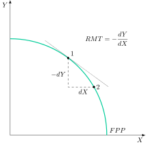
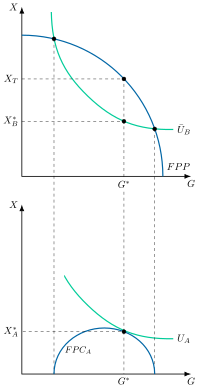
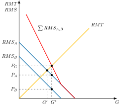
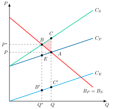
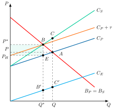
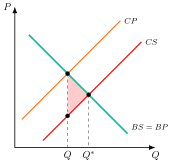
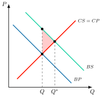
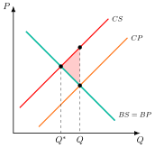
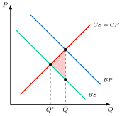

Apuntes para la oposición al Cuerpo de Diplomados Comerciales del Estado
15 Economía del bienestar (II). Los fallos del mercado: externalidades y bienes públicos. Intervención y fallos del sector público.
15.1 Introducción  1'
1'
La Economía del bienestar es la rama de la teoría económica que intenta valorar, desde un punto de vista colectivo, las distintas situaciones en las que puede encontrarse un sistema económico. Estudia la deseabilidad social de los estados económicos alternativos a través de distintos criterios de valoración.
El criterio fundamental que ha surgido en el campo de la Economía del bienestar para valorar el bienestar social es el de eficiencia económica, entendida como mejor uso posible de los recursos limitados.
Pero, ¿qué sucede cuando el sistema de precios falla? ¿Cómo se determina el precio de algo que beneficia a toda la sociedad, como la defensa nacional, o de un servicio como la educación, que genera beneficios a largo plazo para todos, no solo para quienes estudian? Y, ¿qué pasa cuando una fábrica contamina un río, sin asumir el coste que genera para la comunidad?
Por consiguiente, el objetivo de esta exposición será estudiar las imperfecciones de mercado, centrándonos en el caso de los bienes públicos y las externalidades y en sus posibles soluciones tanto públicas como privadas a través del siguiente esquema:
Concepto de eficiencia económica.
Optimalidad de la competencia perfecta.
Fallos de mercado: bienes públicos y externalidades.
Otros fallos de mercado.
Fallos del sector público.
15.2 Concepto de Eficiencia Económica 3'
Comenzando con el concepto de eficiencia económica, la economía del bienestar considera que una asignación es eficiente en el sentido de Pareto cuando no es posible reorganizar los recursos de forma que algún individuo mejore su bienestar sin empeorar el bienestar de nadie. Además, para que una asignación sea eficiente en el sentido de Pareto tienen que cumplirse 3 condiciones: óptimo de Pareto en producción, consumo y global.
Para su demostración, se van a utilizar los siguientes supuestos de partida:
Modelo 2x2x2: se van a utilizar 2 factores productivos, capital, \(K\), y trabajo, \(L\), para producir 2 bienes, \(X\) e \(Y\), por medio de una función neoclásica de buen comportamiento, que van a consumir 2 agentes, \(A\) y \(B\).
Inexistencia de efectos externos y de bienes públicos.
Los consumidores y productores serán racionales.
Modelo cerrado, por lo que las rentas se agotan, es decir, se vacía el mercado.
Eficiencia en producción
Bajo estos supuestos, para conseguir la eficiencia en producción las condiciones de primer orden establecen que la relación marginal de sustitución técnica para la producción de \(X\), \(RMST^{x}_{K,L}\), debe coincidir con la relación marginal de sustitución técnica para la producción de \(Y\), \(RMST^{y}_{K,L}\), y a los precios relativos de los factores1:
\[RMST^{x}_{K,L}=RMST^{y}_{K,L}=\dfrac{w}{r} \tag{15.1}\] es decir, deberá coincidir la tasa a la que se intercambian los factores productivos manteniendo constante el nivel de producción.
El resultado marcará las combinaciones eficientes en producción y que, gráficamente en el plano de 2 bienes como el de la Figura 15.1, quedan recogidas en la \(FPP\), cuya pendiente es la relación marginal de transformación, \(RMT_{x,y}\) o el coste de oportunidad de sustituir un bien por otro en la producción y, a su vez, existen infinitos óptimos de Pareto en producción: \[RMT=\dfrac{CMg_{X}}{CMg_{Y}} \tag{15.2}\]

Eficiencia en consumo
Por otro lado, una asignación es eficiente en el consumo si la relación marginal de sustitución para el individuo \(A\), \(RMS^{A}_{x,y}\), coincide con la relación marginal de sustitución para el individuo \(B\), \(RMS^{B}_{x,y}\), y a su vez se igualan a los precios relativos de los bienes2: \[RMS^{A}_{x,y}=RMS^{B}_{x,y}=\dfrac{P_{X}}{P_{Y}} \tag{15.3}\] es decir, la valoración relativa que realizan los consumidores de los bienes \(X\) e \(Y\) en términos del otro bien debe ser la misma para ambos consumidores o, lo que es lo mismo, deben coincidir las tasas a las que los individuos pueden intercambiar un bien por otro manteniendo constante su utilidad.
Eficiencia global
Por último, para que una asignación sea un óptimo global la relación marginal de transformación debe coincidir con la relación marginal de sustitución de ambos individuos: \[RMT_{x,y}=RMS^{A}_{x,y}=RMS^{B}_{x,y} \tag{15.4}\] es decir, debe existir eficiencia simultánea tanto en la producción como en el consumo, por lo que la valoración relativa de los bienes en el consumo coincidirá con la valoración relativa en la producción.
15.3 Optimalidad de la competencia perfecta 1'
Una vez definido el criterio de eficiencia, la economía del bienestar analiza si existe alguna estructura del mercado capaz de generar eficiencia en los 3 sentidos sin intervención pública. Bajo determinados supuestos estos resultados pueden obtenerse en un sistema competitivo de competencia perfecta, es decir, cuando:
Los mercados sean completos, es decir, todos los bienes se intercambian en el mercado a precios públicamente conocidos.
Información perfecta, no existan fallos de información.
Agentes precio-aceptantes.
Todas las acciones quedan determinadas por los precios.
Bajo estos supuestos, un equilibrio competitivo se define como un vector de precios y de asignaciones de bienes y factores tal que los agentes maximizan su utilidad –por el lado del consumo– y los beneficios –por el lado de la producción– y todos los mercados se vacían3.
A partir de esta noción de equilibrio competitivo se formulan los 2 teoremas fundamentales de la Economía del Bienestar
Primer Teorema de la Economía del Bienestar: en ausencia de fallos de mercado, todo equilibrio general competitivo es un óptimo de Pareto.
Segundo Teorema de la Economía del Bienestar, cualquier asignación eficiente en sentido de Pareto puede alcanzarse como un equilibrio competitivo a través de la redistribución de las dotaciones iniciales.
Por lo tanto, el primer teorema sirve de defensa del libre mercado –limitando el papel del Estado a la corrección de imperfecciones–, mientras que el segundo teorema abre la puerta a la intervención pública ex ante para que, mediante la redistribución –y, posteriormente, la acción libre de los agentes en el mercado–, se alcance un determinado equilibrio deseado, separando así las dimensiones de eficiencia y equidad.
15.4 Fallos de mercado: bienes públicos y externalidades11'
No obstante, si alguno de esos supuestos no se cumple, aparece un fallo de mercado, es decir, una situación en la que el equilibrio competitivo deja de ser eficiente en el sentido de Pareto. Algunos de estos fallos son:
Bienes públicos.
Externalidades.
Competencia imperfecta.
Información imperfecta.
El análisis se centrará en los bienes públicos y en las externalidades4.
Esto se debe a que en el caso de las externalidades y los bienes públicos, el objetivo de la intervención ya no es la solución competitiva cuando existen estos fallos de mercado, ya que no es la óptima, y por tanto el objetivo de la intervención deberá ser intentar establecer un equilibrio que si lo sea.
Por ello, tanto en el caso de los bienes públicos como de las externalidades vamos a estudiar 2 cuestiones básicas: i) Diferencia entre la asignación competitiva –es decir, con fallos de mercado– y la asignación óptima. ii) Mecanismos correctores.
Bienes públicos
Un bien público se diferencia de los bienes privados en que:
No existe rivalidad en su consumo, es decir, el hecho de que un agente aumente su consumo no implica una disminución de los beneficios que reporta el consumo del bien al resto de individuos, es decir, el coste marginal de un usuario adicional es nulo. A su vez, se puede distinguir entre
No rivalidad estricta, propia de los bienes públicos puros.
No rivalidad parcial, propia de los bienes públicos impuros, que empiezan a ser rivales cuando se congestionan.
No son excluibles, es decir, no es posible, o resulta demasiado costoso, impedir su consumo a quien no paga por ellos.
| \(\underleftarrow{\quad+\quad}\) Exclusión \(\underrightarrow{\quad-\quad}\) | ||
|---|---|---|
| \(\underleftarrow{\,\,-\,\,}\) Rivalidad5 \(\underrightarrow{\,\,+\,\,}\) | Bienes privados6: mercancías | Recursos comunes o comunales: pastos, caladeros |
| Bienes de club: TV de pago, wifi, autopistas | Bien público puro: defensa nacional, alumbrado público, aire | |
De esta forma, ante bienes públicos puros el sistema de precios dejará de ser válido porque solo reflejará la utilidad del individuo que más valora el bien, dado que el resto actuará como free-rider. Por lo tanto, se genera un equilibrio general competitivo que no es eficiente en el sentido de Pareto.
Así, desaparece la vinculación entre precio y utilidad que constituye el punto fundamental de la optimalidad de la competencia perfecta7.
Diferencia entre la asignación competitiva y la asignación óptima
A continuación, se estudiará analíticamente el caso de los bienes públicos en el marco del modelo de Samuelson (1954), en el que existen 2 individuos, \(A\) y \(B\), que consumen 2 bienes, un bien público, \(G\), y un bien privado, \(X\). La condición de optimalidad será la solución al siguiente problema de maximización de la utilidad de A, \(U_{A}\), que consume bien privado y bien público:
\[\max\quad U_{A}\left(X_{A},G\right) \tag{15.5}\] sujeto a una utilidad dada del individuo \(B\), una cantidad dada del bien \(X\) y una cantidad de bien público, \(G\), que coincidirá en el consumo tanto para el individuo \(A\) como el individuo \(B\), ya que se asume que el bien público es no rival en el consumo, y la última restricción que impone que la solución esté sobre la \(FPP\) \[\begin{aligned} \bar{U}_{B} & =U_{B}\left(X_{B},G\right)\\ X & =X_{A}+X_{B}\\ G & =G_{A}=G_{B}\\ T\left(X,G\right) & =0 \end{aligned} \tag{15.6}\]
Por lo tanto:
La condición de asignación eficiente del problema determinará lo que se denomina como condición de Samuelson, es decir, la relación marginal de transformación del bien \(X\) y el bien público \(G\), será igual a la suma de las relaciones marginales de sustitución de todos los individuos: \[RMT_{X,G}=\sum\limits_{i=1}^{n}RMS^{i}_{X,G} \tag{15.7}\] es decir, el coste de oportunidad de producir una unidad más del bien público debe igualarse a la suma de lo que esa unidad vale para cada individuo, todo ello en términos del bien privado.
Esto difiere de la solución competitiva, que hubiera conducido a una igualación de las relaciones marginales de sustitución, no alcanzando pues la solución óptima8.
Así, la provisión de un bien público debe hacerse hasta que la suma de las valoraciones marginales individuales del bien público –es decir, la valoración marginal social– se iguale al coste marginal de dicho bien, todo en términos del bien privado. O dicho de otra manera: la provisión óptima es aquella en la que el coste de producir la última unidad del bien público es igual a la utilidad que esta unidad reporta a la colectividad.
Gráficamente, en un plano de consumo del bien privado, \(X\), y del bien público, \(G\), como el de la Figura 15.29:
Dada la curva de \(FPP\) y la curva de indiferencia de \(B\), \(U_{B}\) que corresponde a un nivel fijo de utilidad de dicho individuo, \(\bar{U}_{B}\), dada la cantidad consumida total del bien \(X\), \(X_{T}\), y del bien \(G\), el individuo \(B\) consumirá la cantidad \(X^{*}_{B}\) y \(G^{*}\).
A su vez, proyectando en un plano de consumo del bien \(X\) y del bien \(G\), la diferencia entre la \(FPP\) y la utilidad del individuo \(B\), se podrá determinar la frontera de posibilidades de consumo del individuo \(A\), \(FPC_{A}\). De esta forma, el individuo \(A\) consumirá la misma cantidad que el individuo \(B\) del bien público, \(G^{*}\), ya que no existe rivalidad en el consumo y la cantidad de \(X\) que \(B\) no consuma, \(X^{*}_{A}\).
Nótese que la condición de eficiencia exige que \(A\) consuma allá donde su frontera de posibilidades de consumo sea tangente a la curva de indiferencia más alejada del origen, consumiendo \(X^{*}_{A}\) y \(G^{*}\).
En el óptimo ambos consumidores consumen la misma cantidad del bien público, \(G^{*}\), pero su valoración marginal, es decir, su \(RMS\), es distinta. Con un bien privado ocurre lo contrario: cada individuo consume una cantidad diferente, pero, por la segunda ley de Gossen, iguala las utilidades marginales por euro de todos los bienes, es decir, su \(RMS\) al precio relativo, y como todos se enfrentan a los mismos precios, sus \(RMS\) coinciden.

Infraproducción
Sin embargo, el mercado, por sí mismo, no proveerá una cantidad suficiente del bien público: la empresa no producirá hasta que el coste marginal iguale la utilidad marginal social, sino hasta que iguale las utilidades marginales reveladas, que serán menores que las reales.
Se da, pues, una ineficiencia que aleja al equilibrio del óptimo de Pareto, ya que existe una cantidad no producida para la cual la valoración de la sociedad es mayor que el coste de la producción.
Esta infraproducción del bien público se puede ver gráficamente a partir del análisis de Bowen (que no es más que el equivalente al modelo de Samuelson bajo un enfoque de equilibrio parcial):
Gráficamente, en un plano de \(RMS\) y \(RMT\), y \(G\) como el de la Figura 15.310 se representan
Las \(RMS\) de cada individuo que denotan la utilidad que se deriva de la producción del bien público, y que representan la disposición al pago para cada uno de los consumidores, es decir, la demanda (si el bien fuera privado), y
La oferta que vendrá dada por la \(RMT\), que será el coste marginal de producir el bien público.
El mercado producirá allí donde la \(RMT\) coincida con la máxima \(RMS\) privada, es decir, la de \(A\), produciendo \(G^{\prime}\).
No obstante, la \(RMS\) colectiva, que se calcula a través de la suma vertical de las \(RMS\), ya que el consumo de una unidad de \(G\) es disfrutada por todos11, conduciría a un nivel superior de producción: \(G^{*}>G^{\prime}\).
Así, el mercado, al no tener en cuenta el carácter no rival del bien público, infraproducirá \(G\), dado que no es capaz de recoger el hecho de que el \(CMg\) de dar acceso al otro consumidor es 0. Además, si se incluye el carácter de no exclusión, ningún consumidor racional va a estar dispuesto a pagar por el bien al que puede tener acceso de forma gratuita, dando lugar al problema del free-rider.

Mecanismos correctores
Por consiguiente, el Estado ocupa una posición idónea para resolver este problema mediante la provisión pública –que no quiere decir necesariamente producción pública–, ya que a priori, guía sus acciones en base al interés general y es el único agente capaz de recaudar fondos de manera coactiva. De esta forma, el sector público debe diseñar mecanismos correctores para corregir la infraprovisión.
Así, se enfrenta a dos cuestiones:
Cuánto bien público proveer, lo que requerirá recabar información entre los agentes económicos sobre sus preferencias por el bien público, para determinar el volumen de producción óptimo (aquel en el que el coste de producir una unidad adicional es igual a la utilidad que esta unidad reporta a la colectividad).
El problema es que los agentes, como decíamos, pueden negarse a revelar sus verdaderas preferencias.Cómo distribuir el coste de provisión entre los ciudadanos. En este sentido, el sector público podría:
Atender a la capacidad de pago de cada individuo (vía, por ejemplo, impuestos progresivos). De esta manera, el sector público aprovecharía la necesidad de financiación del bien público para llevar a cabo, además, una redistribución.
Atender al principio de beneficio (cada individuo paga en función de su valoración), esto es, detraer más renta a aquellos que valoren más el bien público. Esto recibe el nombre de “precios personalizados” o “precios de Lindahl”, y consiste en sumar todas las utilidades marginales de todos los consumidores y producir hasta que dicha suma se iguale a los costes marginales. Después, cada individuo pagaría por unidad un precio igual a su valoración marginal del bien, de modo que todos consumen la misma cantidad, pero pagan precios distintos cuya suma cubre el coste marginal. Pero, de nuevo, el sector público dependería de la revelación de las preferencias.
Precios de Lindahl
Así, uno de esos mecanismos es el método de los precios de Lindahl (1919)12, según el cual se pagará el bien público en función de la valoración marginal por parte de los consumidores.
Siendo \(\alpha\) la proporción del precio del bien público que paga \(A\), el precio para \(A\) será:
\[P_{A}=\alpha\cdot P_{G} \tag{15.8}\] por lo que \(A\) maximizará su utilidad cuando el ratio de sus precios se iguale con la relación marginal de sustitución para \(A\): \[\dfrac{\alpha\cdot P_{G}}{P_{X}}=RMS^{A}_{X,G}=\dfrac{UMg^{A}_{G}}{UMg^{A}_{X}} \tag{15.9}\]
Por su parte, el individuo \(B\) maximizará su utilidad igualando el ratio de precios a su relación marginal de sustitución: \[\dfrac{\left(1-\alpha\right)\cdot P_{G}}{P_{X}}=RMS^{B}_{X,G}=\dfrac{UMg^{B}_{G}}{UMg^{B}_{X}} \tag{15.10}\]
A su vez, los productores maximizarán beneficios cuando el ratio de precios del mercado coincida con la relación marginal de transformación: \[\dfrac{P_{G}}{P_{X}}=RMT_{X,G} \tag{15.11}\]
Dadas las condiciones de optimalidad, la condición de eficiencia afirma que la suma de las relaciones marginales de sustitución debe igualarse a la relación marginal de transformación, por lo que sumando los ratios de precios se cumpliría la relación de eficiencia de Samuelson: \[RMS^{A}_{X,G}+RMS^{B}_{X,G}=\dfrac{P_{G}}{P_{X}}=RMT_{X,G} \tag{15.12}\] es decir, la introducción de los precios de Lindahl sería una solución eficiente, tal y como puede observarse ahora en la Figura 15.3.
Sin embargo, para aplicar el mecanismo de precios de Lindahl el sector público dependería de la revelación de las preferencias de los individuos, los cuales no estarán dispuestos a revelarlas sin tener que pagar en función de las mismas, generando un comportamiento de free-rider. Por consiguiente, esta solución solo sería de carácter conceptual.
Mecanismo para la revelación de preferencias (Vickrey, Clarke y Groves)
Una posible solución para conseguir la revelación de las preferencias verdaderas sería utilizar el mecanismo de Vickrey-Clarke-Groves (Vickrey 1961; Clarke 1971; Groves 1973). Así, es eficiente suministrar un bien público si la suma de los valores es superior al coste o igual. Para solucionar el problema del free-rider se puede establecer que todos los agentes paguen lo mismo. Sin embargo dependiendo de si los agentes quieren que se provea el bien o no, pueden tender a exagerar o minimizar sus valoraciones. En todos los métodos vistos hasta ahora el problema es que no cuesta nada ocultar la verdad.
De esta forma:
El mecanismo de VCG parte de que existen unos agentes bisagra que son aquellos que con su estimación hacen que se provea o no el bien público. El impuesto de Clarke se hace recaer sobre dichos agentes bisagra por el sumatorio de las valoraciones netas de los demás agentes (coste – valoración) (todas las valoraciones menos la suya). El problema de dicho impuesto es que incentiva a revelar las preferencias, pero la recaudación puede no ser suficiente para proveer el bien público. Parte además de que las decisiones de consumo no se modifican al introducir dicho impuesto.
Problemas: El impuesto de Clarke, aunque tiene características positivas, plantea algunos problemas.
En primer lugar, solo funciona cuando las preferencias son cuasi-lineales, debido a que la cantidad que tiene que pagarse no debe influir en la cantidad demandada del bien13. Es importante que solo haya un nivel óptimo de bien público.
En segundo lugar, no genera un resultado eficiente de Pareto: el nivel del bien público es el óptimo, pero lo recaudado con el impuesto no puede devolverse a los participantes sin alterar sus incentivos, por lo que el consumo privado queda por debajo del eficiente1415.
Finalmente el último problema se refiere a la disyuntiva entre equidad y eficiencia inherente al impuesto de Clarke.
Nuevas líneas de investigación
Aplicación de la teoría de juegos16. Se plantea un juego con dilema del prisionero en el que la estrategia de los individuos versa sobre la contribución a realizar para la provisión del bien público, y donde los resultados vienen dados por el volumen de bien público que se puede proveer a partir de las contribuciones ofrecidas por los agentes económicos. Si el juego se repite indefinidamente, la cooperación no llega a ser una estrategia dominante, porque si el otro jugador nunca coopera tampoco a uno le conviene hacerlo, pero la amenaza de castigo futuro permite sostenerla como equilibrio. Los trabajos de la politóloga Elinor Ostrom (Premio Nobel de Economía en 2009) documentaron que muchas comunidades logran en la práctica esa cooperación mediante reglas propias de vigilancia y sanción.
Bienes públicos locales. Tiebout (1956) defendió que la solución a la infraprovisión de bienes públicos pasaba por la creación de un cuasi-mercado de éstos, de forma que los individuos revelarían sus preferencias por los bienes públicos desplazándose a aquellas zonas donde las políticas públicas se aproximasen más a sus preferencias (el conocido como “voto con los pies”)
Mecanismos de decisión del sector público. Numerosos estudios demuestran que cuanto mayor es la participación del grupo objetivo en la elección del bien público a proveer, mayor predisposición tienen los individuos a contribuir. A modo de ejemplo, en 2010 economistas del MIT llevaron a cabo un experimento en 49 aldeas indonesias a las que se les daba a elegir un bien público (pozo, alcantarillado, alumbrado, etc.). Algunas aldeas tomaron la decisión a través de comités elegidos por ellos; otros, por referéndum directo. Los habitantes de las aldeas que decidieron vía plebiscito directo tenían mayor predisposición a contribuir a la financiación, construcción y protección del bien.
Economía de la felicidad. La conocida como economía de la felicidad ha despertado un gran interés en los últimos años. La economía de la felicidad se focaliza en determinar los factores de los que depende la felicidad de los individuos. Recientemente, se ha utilizado para valorar bienes públicos. La idea es llevar a cabo encuestas en las que se pregunta a los individuos su nivel de felicidad (por ejemplo, del 1 al 10), su nivel de renta, y cualquier otra variable observable. En paralelo se obtienen datos del nivel de bienes públicos de los que disfruta cada agente (por ejemplo, gasto acumulado en infraestructuras en su barrio). Entonces se estima la felicidad de los individuos como una función de su renta, del nivel de bien público y del resto de variables. Manteniendo el nivel de felicidad constante, se puede determinar el nivel de renta que los individuos estarían dispuestos a renunciar (por ejemplo, vía impuestos) a cambio de una unidad adicional de bien público.
La literatura sobre los bienes públicos de las últimas décadas tiende a relativizar el concepto de bien público, considerando que el bien público puro hasta ahora analizado es una rareza, y que en realidad suelen presentarse bienes con una mayor o menor concurrencia de externalidades.
De esta forma, los problemas relacionados con su provisión óptima son los propios de los efectos externos, en los que el mercado puede tener un papel importante.
Externalidades
Las externalidades abarcan aquellas situaciones en las que la producción o el consumo de un bien incide (positiva o negativamente) en la utilidad o beneficio de otro agente económico, sin que esa incidencia tenga reflejo en los precios ni en los costes.
De esta forma, de nuevo los precios dejan de ser señales válidas, pues solo reflejarán la utilidad que el bien reporta a quien lo consume y los costes que genera a quien lo produce, por lo que generan un equilibrio general competitivo que no es Pareto eficiente.
Hay por tanto dos elementos característicos de las externalidades:
No se reflejan directamente en el sistema de precios, lo cual las diferencia de las economías pecuniarias externas y
No son evitables por quien las sufre ni buscadas por quien se beneficia de ellas.
Al igual que para los bienes públicos, para las externalidades vamos a ver la diferencia entre la asignación competitiva y la asignación óptima, y los posibles mecanismos correctores.
Diferencia entre la asignación competitiva y la asignación óptima
Analíticamente, para el caso de una externalidad en el consumo de \(X\) que realiza A, la condición de optimalidad vendría de la resolución del siguiente problema de maximización de la utilidad de A, que deriva del consumo de \(X\) y de \(Y\):
\[\max\quad U_{A}\left(X_{A},Y_{A}\right) \tag{15.13}\]
sujeto a \[\begin{aligned} \bar{U}_{B} & =U_{B}\left(X_{B},Y_{B},X_{A}\right)\\ \bar{X} & =X_{A}+X_{B}\\ \bar{Y} & =Y_{A}+Y_{B} \end{aligned} \tag{15.14}\]
Las condiciones de primer orden del problema establecen que \[RMS_{B}=RMS_{A}+\dfrac{\partial U_{B}/\partial X_{A}}{\partial U_{B}/\partial Y_{B}} \tag{15.15}\]
Así:
La solución competitiva/de libre mercado hubiera conducido a una igualación de las relaciones marginales de sustitución, no alcanzando, pues, la solución óptima.
Mientras que las \(RMS\) denotarían la valoración relativa que los consumidores \(A\) y \(B\) realizan de su propio consumo de los bienes \(X\) e \(Y\), el factor adicional estaría denotando la valoración, en términos del bien \(Y\), que \(B\) realiza del consumo de \(X\) que \(A\) lleva a cabo.
Este término podrá ser positivo (externalidad positiva) o negativo (externalidad negativa).
La causa radica en que se generaría una ineficiencia de la solución de mercado porque el precio no recogería la externalidad. Por consiguiente, los precios de mercado, al no incluir las valoraciones marginales de los perjudicados o beneficiados por un efecto externo, dejarían de ser señales que orientarían eficientemente las decisiones de producción y consumo y los agentes emisores sobreproducirán las actividades que generan externalidades negativas e infraproducirán las que generan externalidades positivas.
Gráficamente, en un plano precios y cantidades de un bien \(X\) como el de la figura Figura 15.4, se va a analizar una externalidad negativa en la producción:
Un bien producido por una empresa en cuyo proceso se genera una externalidad negativa, por ejemplo, en el proceso productivo emite humos que contaminan el aire y perjudican a los residentes en una ciudad cercana a dicha empresa.
Se representarán las curvas de oferta que reflejan el coste marginal privado, \(C_{P}\), la curva de demanda, \(B_{P}=B_{S}\) –ya que en este caso el beneficio privado y el social coinciden–, que representa el beneficio marginal privado que obtienen los consumidores de cada unidad del bien \(X\).
La curva \(C_{E}\) que representa el coste marginal externo o daño marginal que causa cada unidad producida del bien \(X\). Su pendiente positiva refleja el supuesto de que una cantidad creciente de contaminación implica perjuicios crecientes.
La curva \(C_{S}\), que representará la suma de \(C_{P}\) más \(C_{E}\) y representa el coste marginal social de producir una unidad adicional de \(X\).

De acuerdo al gráfico:
El equilibrio competitivo se alcanzaría en el punto \(A\), donde el coste marginal privado de la producción del bien se iguala al beneficio marginal privado. De este modo, la producción de equilibrio sería \(Q\) y el precio \(P\).
Sin embargo, este nivel de producción no es eficiente, ya que no tiene en cuenta el efecto de la externalidad. El nivel eficiente corresponde al punto \(B\), punto de intersección entre la curva \(C_{S}\) y la función de demanda, \(B_{P}=B_{S}\).
El punto \(E\), situado sobre \(C_{P}\) en ese mismo nivel de producción \(Q^{*}\), no es un equilibrio: es un punto auxiliar que se usará más adelante para calcular el segmento \(BE\), el importe del impuesto corrector.
Por lo tanto el nivel eficiente de producción sería \(Q^{*}\) a un precio \(P^{*}\) que incluye el coste marginal privado más la valoración del daño que sufren los perjudicados, evaluados ambos costes marginales en el nivel de producción \(Q^{*}\).
Esto lleva a una producción excesiva del bien, a la que se asocia un coste de eficiencia igual al área \(ABC\)17.
Medidas correctoras
La intervención pública puede corregir este fallo de mercado, tomando como base los propios mecanismos de mercado, es decir, que en lugar de asumir la provisión del bien (única forma posible de intervención en el caso de bienes públicos), el sector público puede permitir que las fuerzas del mercado jueguen libremente, pero incidiendo previamente en el precio para que éstos internalicen los efectos externos, y que reflejen así todos los costes y beneficios asociados a la producción y al consumo.
Por lo tanto, existen 3 tipos de medidas correctoras:
Legislación, asignar derechos de propiedad y permitir la aplicación del Teorema de Coase (Coase 1960), que afirma que, si los derechos de propiedad están bien definidos, los costes de negociación son nulos y la información es perfecta, las partes afectadas negociarán hasta internalizar el efecto externo18. De esta manera se alcanzará un óptimo de Pareto.
Además, por extraño que parezca, en ausencia de efecto renta, la asignación de recursos será siempre la misma con independencia de a quién se asignen los derechos de propiedad, pues esto afectará a la equidad, pero no a la eficiencia.Regulación, si el sector público conociese el efecto externo podría establecer una normativa que prohibiese la producción por encima de los niveles de la asignación eficiente, es decir, mediante una cuota.
Sin embargo, esto conlleva una serie de inconvenientes ya que:Requiere conocer la curva \(C_{E}\), que no es observable.
Puede que existan muchas empresas generadoras de externalidad, por lo que se plantea el problema de cómo distribuir las cuotas.
Cuando se trata de una externalidad positiva, el problema sería a la inversa, es decir, debería promoverse o incentivarse la producción de dicho bien.
Financiación, mediante instrumentos de tipo pigouviano –denominados así en honor a Arthur Pigou (Pigou 1920)–, es decir, impuestos –para reducir la externalidad negativa– y subvenciones –para estimular las externalidades positivas, como en el caso de subvención de la educación o del uso de los transportes públicos19–20.
Gráficamente, como se observa en la Figura 15.5, en ambos casos se desplazaría la curva de oferta hasta que \(Q\) coincidiese con \(Q^{*}\), que se convertiría en \(C_{P}+\tau\), donde \(\tau=BE\), es decir, el daño marginal correspondiente al nivel de producción socialmente eficiente. Así, en un contexto de información perfecta, la imposición y la regulación conducen al mismo nivel de producción. La diferencia entre ambas formas de intervención radica en la distribución de las ganancias21.Figura 15.5: Corrección de la externalidad: Impuestos pigouvianos 
Sin embargo, este mecanismo tiene inconvenientes similares a los de la regulación:
Establecer un impuesto óptimo requiere conocer la externalidad que normalmente no es observable y surgiendo así el problema de revelación de preferencias22.
Los impuestos óptimos serían diferentes para cada empresa.
No se garantiza que el efecto externo se internalice si los objetivos de las empresas son otros que no sean la maximización de beneficios23.
Las subvenciones correctoras deben financiarse con impuestos que sí son distorsionantes, y un impuesto que no se fije exactamente en el daño marginal introduce su propia distorsión, por lo que en la práctica ambos instrumentos tienden a resultados de second best24.
Otras soluciones pasarían por crear unidades de decisión más grandes que englobasen a generadores y a receptores con el objetivo de que negocien una solución eficiente. Esto es debido a que los efectos externos dan lugar a asignaciones ineficientes porque sus generadores, al adoptar sus decisiones, no toman en cuenta el bienestar de los receptores 25. Además, tratándose de efectos externos negativos, además de las soluciones analizadas, se podría recurrir a la subasta de los derechos de propiedad26.
15.5 Otros fallos de mercado 1'
A continuación se presentan otros posibles fallos de mercado.
Monopolio natural
Un monopolio natural surge cuando una única empresa puede abastecer todo el mercado a un coste menor que si lo hicieran varias. Esto ocurre cuando los costes son subaditivos, es decir, cuando ningún reparto de la producción entre varias empresas resulta más barato que concentrarla en una. Las economías de escala, con un coste medio decreciente, son una condición suficiente, aunque no necesaria. Es típico en infraestructuras como redes eléctricas o ferroviarias, donde duplicar instalaciones sería ineficiente. Aunque esta empresa puede ofrecer precios más bajos inicialmente, su posición dominante puede llevarla a reducir la producción y aumentar los precios, generando ineficiencia. Para evitarlo, el Estado puede intervenir regulando tarifas, ofreciendo subsidios para cubrir pérdidas o incluso gestionando directamente el servicio, como ocurre con algunas empresas públicas de transporte.
Información asimétrica
La información asimétrica aparece cuando una de las partes en una transacción conoce más que la otra, lo que distorsiona el funcionamiento del mercado. Este problema se manifiesta de dos formas:
Selección adversa (ex ante): ocurre antes de cerrar el trato. Akerlof (1970) lo ilustró con el mercado de coches usados: el vendedor conoce defectos que el comprador no puede observar, lo que lleva a los compradores a desconfiar y reducir su disposición a pagar, afectando a todo el mercado.
Riesgo moral (ex post): aparece después de la transacción, cuando una de las partes, cuyas acciones la otra no puede observar, cambia su comportamiento porque ya no soporta todo el riesgo de sus decisiones —un concepto del mundo de los seguros que Arrow (1963) incorporó al análisis económico al estudiar la asistencia sanitaria—. Un ejemplo sería un empleado que, una vez contratado, reduce su esfuerzo al no estar supervisado, perjudicando a la empresa. Para mitigar estos efectos, se utilizan mecanismos como certificaciones, garantías, auditorías o incentivos que promuevan la revelación de información y alineen los intereses de ambas partes.
Información incompleta
A diferencia de la asimétrica, la información incompleta implica que todos los agentes tienen el mismo nivel de conocimiento, pero este es insuficiente para tomar decisiones óptimas. Esto genera incertidumbre sobre escenarios futuros, como ocurre en mercados financieros ante eventos imprevisibles. Una solución teórica son los mercados contingentes, en los que hoy se compra un bien que solo se entrega si se produce un determinado estado de la naturaleza. Según el resultado de Arrow y Debreu, si existiera uno para cada estado posible, la asignación sería eficiente. Sin embargo, su implementación suele ser costosa y compleja, lo que limita su uso en la práctica. Por ejemplo, los seguros ante catástrofes naturales intentan cubrir este tipo de incertidumbre, pero requieren estimaciones difíciles y primas elevadas.
15.6 Fallos del sector público2'30"
Frente a estos fallos de mercado, cabría pensar que la intervención pública restaura siempre la eficiencia. Sin embargo, la propia intervención tiene sus propios costes: son los fallos del sector público, estudiados por la Escuela de Public Choice (Buchanan y Tullock 1962), que aplica las herramientas del análisis económico a la toma de decisiones políticas partiendo de que también los votantes, los políticos y los burócratas actúan guiados por su interés propio.27
Los principales son:
Distorsiones en los precios: toda intervención pública altera el sistema de incentivos previamente existente, de manera que las ganancias de eficiencia obtenidas al corregir un fallo de mercado concreto pueden verse compensadas, total o parcialmente, por nuevas pérdidas de eficiencia generadas en otras partes de la economía.
Búsqueda de rentas –rent-seeking–, concepto de Tullock (1967) al que Krueger (1974) dio nombre: los grupos de presión dedican recursos a conseguir del sector público ventajas en su favor, como protecciones o exenciones, en lugar de dedicarlos a actividades productivas (Olson 1965). Cuanto más pequeño y concentrado es el grupo, más fácil le resulta organizarse frente a colectivos grandes y difusos como los consumidores, que además tienen pocos incentivos para informarse dado el escaso peso de su voto individual –la llamada ignorancia racional del votante–. Ejemplos típicos son los sindicatos o las patronales, frente a colectivos como los consumidores en general, que raramente logran organizarse pese a ser, en conjunto, los más perjudicados.
Captura del regulador: según Stigler (1971), los grupos regulados tienen mucho más interés e información sobre la regulación que el público general, lo que les permite orientarla a su favor. La regulación pensada originalmente para proteger el interés general acaba, con el paso del tiempo, sirviendo sobre todo a los intereses del sector regulado. Cuando esto se combina con la búsqueda de rentas, da lugar a lo que Adams (1981) denominó el “triángulo de hierro” entre políticos, burócratas y grupos de interés.
Burocracia de Niskanen (1971): dado que su remuneración suele ser en gran parte fija, el burócrata maximiza su utilidad a través del tamaño del presupuesto que gestiona, ya que de ahí procede el poder y el prestigio que le otorga dirigir un departamento grande, compitiendo con otros departamentos por atraer fondos hacia sus programas de gasto.
Ciclo político de Nordhaus (1975): los gobiernos pueden aumentar el gasto público y reducir impuestos antes de unas elecciones, aunque ello no responda a criterios de eficiencia, aprovechando la miopía de unos votantes con información limitada. Esto se traduce en políticas expansivas en los meses previos a los comicios, seguidas de ajustes bruscos justo después de la cita electoral.
Inconsistencia temporal (Kydland y Prescott 1977): un gobierno que anuncia una política óptima a largo plazo tiene luego incentivos para desviarse de ella una vez que los agentes privados ya han fijado sus expectativas conforme al anuncio, lo que explica por qué reglas fijas e instituciones independientes –como un banco central autónomo– mejoran el resultado frente a la discrecionalidad.
Ilusión fiscal, concepto de Puviani (1903) desarrollado por Buchanan y Wagner (1977): los votantes infravaloran la carga fiscal que soportan, lo que permite aumentar el tamaño del sector público sin que perciban un aumento equivalente de la presión fiscal –por ejemplo, mediante retenciones en origen o imposición indirecta–.
Sesgo deficitario de Alesina y Tabellini (1990): a diferencia de la ilusión fiscal, aquí el mecanismo no depende de que los votantes perciban mal la carga fiscal, sino de la alternancia en el poder. Un gobierno que prevé perder las elecciones frente a otro de distinta ideología tiene incentivos a endeudarse en exceso para condicionar el gasto de su sucesor, sesgo tanto mayor cuanto mayor es la polarización política.
15.7 Conclusiones30"
Como conclusión, la existencia de fallos de mercado, como la provisión insuficiente de bienes públicos o la presencia de externalidades, justifica la intervención estatal para mejorar la eficiencia. No obstante, esta intervención no está exenta de riesgos: la ineficiencia administrativa, la captura por grupos de interés o la falta de incentivos adecuados pueden comprometer sus resultados. Reconocer los límites del sector público es esencial para diseñar políticas más efectivas.
Además, los bienes públicos globales —como la estabilidad climática o la salud mundial— plantean desafíos que trascienden las capacidades de los gobiernos nacionales. Su provisión exige una gobernanza internacional sólida, basada en la cooperación y la coordinación entre países.
Por tanto, la intervención pública debe ser estratégica y prudente, evaluando tanto los fallos del mercado como los del propio Estado. Solo así se podrá avanzar hacia soluciones sostenibles que respondan a problemas complejos y transnacionales, sin caer en simplificaciones que ignoren la realidad institucional y política
Apéndice
15.A.1. Los fallos del sector público
Como se analizó anteriormente, ante fallos de mercado, la intervención pública en la economía podía mejorar la eficiencia. No obstante, las imperfecciones del mercado son una condición necesaria pero no suficiente para la intervención gubernamental en la economía. Al fin y al cabo, los costes de la intervención no son nulos, y a los fallos de mercado se contraponen los fallos del sector público.
Gran parte de este análisis procede de la Escuela de Public Choice, fundada por Buchanan y Tullock (1962), que aplica las herramientas del análisis económico a la toma de decisiones políticas, partiendo de que también los votantes, los políticos y los burócratas actúan guiados por su interés propio. Un ejemplo es la ignorancia racional del votante: dado que el coste de informarse adecuadamente sobre cada política es desproporcionado frente a la influencia real de un único voto en el resultado electoral, al votante le resulta racional permanecer poco informado.
A continuación, se presentan los principales fallos del sector público:
Distorsiones en los precios que pueden generar ineficiencias: toda intervención altera el sistema de incentivos previamente existente, por lo que las ganancias de eficiencia pueden verse disminuidas por las pérdidas de eficiencia generadas en otras partes de la economía.
Búsqueda de rentas –rent-seeking–: los grupos de presión se pueden definir como un conjunto de individuos con intereses comunes que se organizan para interferir en las decisiones de los políticos con el fin de que éstos favorezcan sus intereses privados2829. Las actividades de búsqueda de rentas que llevan a cabo los grupos de presión generan ineficiencias por 2 motivos:
Se dedican recursos a obtener el favor de los poderes públicos, en lugar de dedicarlos a actividades productivas.
Se toman decisiones favorables a los intereses de los grupos de presión, que no suelen coincidir con los de la colectividad.
Ejemplos de grupos de presión: sindicatos, patronales, etc.
Captura del regulador: según Stigler (1971), se produce porque los grupos regulados tienen mucho más interés e información sobre la regulación que el público general, lo que les permite influir en el regulador hasta conseguir que la regulación acabe sirviendo a sus propios intereses en lugar de al interés general. A esto se suma que el simple contacto continuado entre representantes de una empresa o sector y agentes del sector público acaba generando inevitablemente relaciones personales que crean un sesgo inconsciente en la regulación a favor del colectivo.
Tanto la búsqueda de rentas como la captura del regulador pueden dar lugar a lo que Adams (1981) denominó “el triángulo de hierro”, teoría según la cual las decisiones políticas están determinadas por las relaciones entre las 3 partes del triángulo: políticos, burócratas, y grupos de interés.Teoría de la burocracia de Niskanen (1971): para Niskanen, el burócrata es un individuo que, como todos los demás, trata de maximizar su utilidad. En el caso de los burócratas, dado que su remuneración suele ser en gran parte fija, su utilidad procederá principalmente del poder y del prestigio que tengan, lo que a su vez dependerá del tamaño del presupuesto que maneje su departamento. Así, los burócratas competirán con otros departamentos por atraer fondos hacia los programas de gasto que ellos gestionan.
Aversión al riesgo de Downs (1967). Este autor considera que los burócratas se caracterizan por su aversión al riesgo. La aversión al riesgo va a suponer un menor ritmo de innovación y, en definitiva, una mayor resistencia al cambio, lo que puede generar ineficiencias.
Teoría del ciclo político de Nordhaus (1975): puede ocurrir que las decisiones de gasto público no respondan a cuestiones de eficiencia, sino que se vean influidas por el ciclo electoral, de manera que la clase política aumente el gasto público y disminuya los impuestos en los períodos previos a unas elecciones30.
Inconsistencia temporal de Kydland y Prescott (1977): un gobierno puede anunciar una política óptima a largo plazo –por ejemplo, comprometerse a mantener la inflación baja–, pero una vez que los agentes privados ya han fijado sus expectativas conforme a ese anuncio, al gobierno le interesa a posteriori desviarse de lo anunciado para obtener beneficios a corto plazo –por ejemplo, generar una sorpresa inflacionista que reduzca el desempleo–. Como los agentes racionales anticipan este incentivo a incumplir, la política anunciada deja de ser creíble, lo que explica por qué reglas fijas y la independencia de instituciones como el banco central pueden mejorar el resultado frente a la discrecionalidad.
Teoría de la ilusión fiscal de Buchanan y Wagner (1977). Los votantes tendrán ilusión fiscal si infravaloran la carga fiscal que soportan. Esto permite aumentar el tamaño del sector público sin que los votantes perciban un aumento equivalente de la presión fiscal. Vías:
Sesgo deficitario de Alesina y Tabellini (1990): a diferencia de la ilusión fiscal, aquí el mecanismo no es que los votantes perciban mal la carga fiscal, sino que el gobierno que prevé ser sustituido por otro de distinta ideología usa la deuda para condicionar el gasto de su sucesor. El resultado es un sesgo estructural hacia el déficit, tanto mayor cuanto más polarizados estén los partidos y más probable sea la alternancia en el gobierno.
Posibles soluciones a los fallos del sector público:
Ligar la retribución a la productividad. Sin embargo, esto acarrea problemas: i) ¿cómo se mide la productividad?33 Esto es particularmente difícil en el sector público, donde la producción suele valorarse al coste de los factores; y ii) ¿quién mide la productividad?
Mejorar los mecanismos de supervisión y control.
Individualizar responsabilidades para evitar que éstas se diluyan.
Separar el diseño de la ejecución, por ejemplo, encargar el análisis coste-beneficio a una agencia independiente, de manera que el sector público no pueda ya subestimar los costes y sobrestimar los beneficios de los proyectos públicos.
Presupuesto de base cero en lugar de presupuesto incremental.
Sustituir la producción pública por privada en aquellos casos en los que sea posible, manteniendo la provisión pública, esto es, que siga siendo pagado con fondos públicos.
Limitar legalmente el tamaño del sector público, es decir, incorporar el concepto de “constitución fiscal”.
15.A.2. Tragedia de los comunes y de los anticomunes
La tragedia de los comunes es la sobreexplotación de un recurso rival y de libre acceso, porque cada usuario no tiene en cuenta el coste que su uso impone a los demás. Ejemplos de ello son el pasto común que se arruina por el pastoreo excesivo o el lago común que se agota por la sobrepesca. Aunque la acción de cada individuo es un intento racional de promover su propio interés a corto plazo, las acciones colectivas del grupo no son beneficiosas para la comunidad a largo plazo.
Así, este dilema plantea una cuestión política desconcertante y muy debatida: ¿Cómo se gestiona un recurso que formalmente no pertenece a nadie? Durante mucho tiempo, la respuesta común fue la conversión de los recursos comunes en propiedad privada o la regulación externa de estos recursos comunes:
Si un recurso se convierte en propiedad privada, el propietario debería tener tanto los incentivos de rentabilidad como la protección de los derechos de propiedad para gestionar todo el recurso de forma responsable.
Si el gobierno regula el recurso, podría imponer normas a los usuarios individuales por el bien común.
Sin embargo, en 1999, la politóloga Elinor Ostrom, ganadora del Premio Nobel, revisó estas soluciones, ya que a veces dejaban los bienes comunes en peor situación (Ostrom et al. 1999). Por un lado, el control privado de recursos que antes eran públicos podía crear los problemas habituales derivados de las prácticas empresariales monopolísticas, mientras que por otro, la supervisión externa podía generar normativas inadecuadas y mal aplicadas.
Así, Ostrom señaló una tercera respuesta a la tragedia de los bienes comunes, que documentó empíricamente basándose en muchos casos de todo el mundo: la utilización del capital social de la comunidad para idear soluciones locales creativas y eficaces.
Anticomunes
Un nuevo enfoque de este debate es la tragedia de los anticomunes, término acuñado por Michael Heller (Heller 1998), entonces en la Facultad de Derecho de Michigan34. En contraste con los problemas creados por la propiedad ambigua de un recurso comunitario, se refiere a lo contrario: la propiedad privada excesiva de un recurso comunitario que impide alcanzar un resultado deseable para la sociedad, llevando a una infrautilización del recurso, al contrario que en la tragedia de los comunes donde se daba un sobreuso.
La tragedia de los anticomunes se aplica ahora comúnmente a los derechos de propiedad excesivos en ámbitos como la investigación biomédica, por ejemplo, en la implementación de la vacunación de la Covid-19 –discusiones sobre la patente podrían haber reducido el proceso de producción, limitar el acceso a la tecnología y la competencia entre empresas, redundando en una infrautilización por exclusión–.
Otro ejemplo claro podría ser la crisis de la vivienda en muchas ciudades. Los procesos de urbanización y planificación otorgan a los grupos vecinales, ecologistas y otras partes interesadas un poder significativo a la hora de decidir si los nuevos proyectos de vivienda siguen adelante y en qué condiciones. Esto crea una situación en la que muchas partes interesadas tienen derecho a excluir a otras del uso de un recurso privado.
En muchos casos, los procesos de urbanización y planificación hacen imposible que los propietarios privados construyan nuevas viviendas, especialmente viviendas plurifamiliares. Esto se traduce en precios elevados, una oferta reducida de viviendas y un aumento del riesgo de exclusión, de pobreza y de personas sin hogar.
15.A.3. Teorema de Coase
Como se analizó anteriormente, el Teorema de Coase consiste en asignar derechos de propiedad sobre la externalidad y dejar que las partes afectadas negocien libremente su uso. De esta manera, se alcanzará un óptimo de Pareto. Además, por extraño que parezca, en ausencia de efecto renta, la asignación de recursos será siempre la misma con independencia de a quién se asignen los derechos de propiedad, pues esto afectará a la equidad, pero no a la eficiencia.
Para su análisis se utilizará la Figura 15.4, con el ejemplo ahora de una acería que, al producir acero aguas arriba, contamina las aguas del río, de forma que la piscifactoría que se encuentra aguas abajo se ve perjudicada –es decir, externalidad negativa en la producción–. A continuación se observará que a quién se asignen los derechos sobre el agua influirá en los esquemas de pagos –es decir, equidad–, pero no en la asignación óptima –que será siempre \(Q^{*}\)–.
Si los derechos de propiedad se conceden a la piscifactoría, la acería tendrá que compensar a la piscifactoría en la cuantía \(B-E\), que es la externalidad asociada al nivel de producción \(Q^{*}\) . A la acería no le interesará producir más –ni menos– de la cantidad \(Q^{*}\): a partir de \(Q^{*}\), una unidad adicional de producción generará menos beneficio marginal \(\left(B_{P}-C_{P}\right)\) que el pago a satisfacer por la externalidad que genera esa unidad adicional, \(C_{E}\).
Si los derechos de propiedad se conceden a la acería, la piscifactoría tendrá que compensar a la acería en la cuantía del beneficio por unidad que ésta deja de producir \(\left(B_{P}-C_{P}\right)\). La piscifactoría buscará una forma de convencer a la fábrica de acero para que disminuya su volumen de producción desde \(Q\) hasta \(Q^{*}\) . Y es que a la piscifactoría no le interesará que la acería produzca menos –ni más– de la cantidad \(Q^{*}\): para cantidades menores de \(Q^{*}\) la cuantía que la piscifactoría tiene que pagar a la acería por el beneficio marginal que ésta deja de percibir \(\left(B_{P}-C_{P}\right)\) es mayor que el daño que deja de recibir la piscifactoría, \(C_{E}\). La disminución de la producción de acero desde \(Q\) hasta \(Q^{*}\) perjudica a la fábrica de acero, que experimentará una disminución de su beneficio representada por el área \(ABE\). Por su parte, la citada disminución de la producción de acero supondrá una mejora para la piscifactoría porque la externalidad disminuirá en el área \(BCAE\). Así pues, con la disminución de la producción que acabamos de considerar, la pérdida que sufriría la fábrica de acero sería menor que la ganancia que experimentaría la piscifactoría. Esto implica que es posible alcanzar algún acuerdo entre ambas en aras del beneficio mutuo. Ambas empresas mejorarían si suscribiesen un acuerdo en virtud del cual la piscifactoría compensase a la fábrica de acero con una cantidad mayor que \(ABE\) pero menor que \(BCAE\).
Así, la ventaja del mecanismo de Coase es que el resultado sería similar al logrado con los instrumentos pigouvianos, con la ventaja de que el Gobierno no necesita conocer la valoración del efecto externo, ya que éste se manifestará a través de la oferta y la demanda.
En cuanto a las desventajas:
Supone cuasilinealidad en las preferencias, es decir, supone que no hay efecto renta, es decir, que la demanda del bien que genera la externalidad es independiente de la renta. Esto permite que la solución no dependa de a quién se asignan los derechos de propiedad. Gráficamente, en una caja de Edgeworth, las curvas de indiferencia son todas ellas traslaciones horizontales unas de otras, de forma que la tangencia se situará siempre en el mismo nivel,es decir, la curva de contrato será horizontal.
Supone ausencia de costes de transacción.
Dificultad de identificación de los agentes.
Altos costes asociados a la puesta en marcha de un mercado de este tipo.
Una aplicación de los instrumentos tipo Coase es el mercado Cap and Trade de la UE: European Union Emissions Trading System (EU ETS). El ETS es la “piedra angular de la política climática europea” y tiene como objetivo la internalización de los costes de contaminación a través de la limitación de la cantidad de emisiones producidas en la UE, siguiendo la lógica del Teorema de Coase. Cada año se asigna un número limitado de derechos equivalentes a emitir una tonelada de \(\text{CO}_{2}\). A continuación, se permite que las empresas comercien con los derechos, permitiendo que aquellas más eficientes se beneficien de la venta de derechos y que las más contaminantes internalicen el coste de la contaminación que producen.
15.A.4. Bienes públicos globales
Los bienes públicos globales son bienes o servicios que benefician a todas las naciones, clases sociales y generaciones sin excepción, un concepto sistematizado por Kaul et al. (1999). Al igual que los bienes públicos nacionales, se caracterizan por la no exclusión y la no rivalidad, pero lo que los define como globales es la escala: sus beneficios son intrínsecos y se extienden a todo el planeta, sin importar las fronteras.
No exclusión: una vez que se provee el bien, es imposible o extremadamente costoso impedir que cualquier persona, en cualquier país, lo consuma —el aire limpio en la atmósfera es un buen ejemplo—.
No rivalidad: el consumo del bien por parte de un país o individuo no reduce la cantidad disponible para el consumo de otros, como ocurre con el conocimiento científico: que un país use la información sobre el genoma humano no limita el acceso de los demás.
Entre los ejemplos más citados en la literatura están la estabilidad climática —las acciones de un país para reducir sus emisiones de gases de efecto invernadero benefician a todos los demás, sin importar dónde se encuentren—, la erradicación de enfermedades contagiosas como la viruela mediante campañas de vacunación coordinadas internacionalmente, el conocimiento científico básico —que, una vez compartido, se convierte en un recurso accesible para toda la humanidad—, y el mantenimiento de la paz y la no proliferación de armas de destrucción masiva, que reduce el riesgo de conflictos a gran escala para el conjunto de países.
Estos bienes no se agregan todos de la misma manera. Siguiendo la clasificación de Hirshleifer (1983), extendida al ámbito global por Sandler (1998), cabe distinguir tres tecnologías de agregación: de suma, cuando el nivel global del bien es la suma de las contribuciones de cada país, como ocurre con la reducción de emisiones; del eslabón más débil, cuando el resultado depende del país que menos contribuye, como sucede en la erradicación de una enfermedad contagiosa, donde el riesgo de rebrote persiste para todos mientras quede un solo país sin vacunar; y del mejor tiro, cuando basta con que un único país lo consiga, como en un avance científico decisivo.
Esta distinción importa porque el problema del “free-rider”, ya presente a nivel nacional, no es igual de severo en los tres casos. En los bienes de suma se agrava en el ámbito global: un país puede decidir no contribuir esperando beneficiarse de las contribuciones de otros —por ejemplo, evitando la inversión en tecnologías limpias mientras se beneficia de la reducción de la contaminación que sí implementan otros países—. En los bienes de eslabón más débil, sin embargo, puede incluso incentivar lo contrario: ayudar al país rezagado, ya que el resultado global depende precisamente de él.
Dado que ni los mercados ni los gobiernos nacionales pueden resolver por sí solos este problema, su provisión exige mecanismos de gobernanza global: acuerdos y tratados internacionales —como el Protocolo de Kioto o el Acuerdo de París—, organismos multilaterales —la Organización Mundial de la Salud en la coordinación de la respuesta a pandemias, o el FMI y el Banco Mundial en la promoción de la estabilidad financiera global—, y mecanismos de financiación como los impuestos globales o las ayudas al desarrollo.
15.A.5. Externalidades gráficamente
Las externalidades en el consumo ocurren cuando el consumo de un bien por parte de un individuo afecta directamente el bienestar de terceros.
Negativas: El consumo impone un coste a terceros. Por ejemplo, el humo de un cigarrillo que afecta a quienes están cerca o el ruido de un concierto en un apartamento que molesta a los vecinos.
Positivas: El consumo beneficia a terceros. La vacunación es un ejemplo claro, ya que la inmunidad de una persona reduce el riesgo de contagio para toda la comunidad. Otro caso es la educación, que alarga la vida, hace a la gente más feliz y la convierte en un ciudadano más informado.
A continuación, se presenta su representación gráfica siendo las ineficiencias las áreas sombreadas y recordando que:
Externalidad negativa en producción, \(BPMg=BSMg\) pero \(CPMg<CSMg\).
Externalidad positiva en producción, \(BPMg=BSMg\) pero \(CPMg>CSMg\).
Externalidad negativa en consumo, \(CPMg=CSMg\) pero \(BPMg>BSMg\).
Externalidad positiva en consumo, \(CPMg=CSMg\) pero \(BPMg<BSMg\).




15.A.6. Provisión pública y externalidades
Si el sector público conoce las preferencias de los agentes con respecto al bien, así como los beneficios y/o costes marginales sociales del mismo, entonces podrá reservarse la producción del bien, y conocerá que la cantidad a lanzar al mercado. Por ejemplo, si un bien genera una externalidad negativa, el sector público podría llegar a tomar la decisión de: prohibir su producción, si se valora que el coste marginal externo es lo suficientemente grande como para anular los beneficios de su producción (otra opción es controlar la cantidad producida, es decir, establecer una regulación de la cantidad producida).
Un ejemplo habitual es el del uso abusivo de los recursos pesqueros: cada pescador produce un efecto insignificante en las reservas marinas totales, pero su uso acumulado por todo el colectivo puede poner su supervivencia en peligro:
En este caso, el sector público puede regular la cantidad de recursos que se pueden explotar: prohibiendo la entrada a nuevos pescadores en el sector, controlando el número de días que está permitido faenar, regulando el acceso de otras flotas a las aguas nacionales, etc.
El valor actual de los beneficios del sector será superior bajo esta regulación, ya que se evita el uso abusivo al adoptar una visión intertemporal de la explotación óptima de los recursos.
Sin embargo, esta regulación tendrá también efectos negativos, en términos de reducción del número de barcos existentes en el sector, descontento del colectivo, abandono de la actividad y necesidad de reestructuración, además de la ya mencionada necesidad de que el sector público disponga en realidad de la suficiente información como para saber cuál es el uso sostenible de los recursos pesqueros.
15.A.7. Elinor Ostrom y la Tragedia de los Comunes
Elinor Ostrom (politóloga estadounidense) obtuvo el Premio Nobel de 2009 investigando cómo las comunidades son o no capaces de gestionar recursos comunes (rivales, pero no excluibles) como tierras de cultivo o aguas de irrigación.
En una célebre publicación de Garrett Hardin en 1968, The Tragedy of the Commons, este describía una situación en la cual unos campesinos compartían un terreno de pasto común, y decidían individualmente cuántas vacas poseer cada uno. El resultado era el característico del dilema del prisionero: aunque colectivamente lo que convenía era mantener un número reducido de vacas, individualmente cada uno tenía un incentivo a incrementar el suyo, puesto que esa era su estrategia dominante (la mejor respuesta tanto si el otro campesino respeta un acuerdo de pocas vacas como si no). Dicho de otro modo, el granjero que añadía una vaca adicional obtenía una ventaja sobre el resto de campesinos. Puesto que todos tenían incentivos a hacer lo mismo, como resultado se obtenía una sobreexplotación del terreno que perjudicaba a todos. Contrariamente a la lógica clásica, en esta circunstancia, cuando un agente actuaba guiado únicamente por su bienestar individual, ni se maximizaba el bienestar social, ni a largo plazo se maximizaba el individual.
Hasta los trabajos de Ostrom, las soluciones más populares establecían que la propiedad privada (es decir, hacer que el bien común sea excluible y por tanto se convierta en un bien privado como los demás) es necesaria para evitar el agotamiento de recursos limitados. Era por tanto una conclusión pesimista: no hay solución de mercado a los bienes comunes: o se privatizan, o se regula su uso por el Estado, con todas las ineficiencias que ello conlleva.
Por el contrario, Ostrom ha documentado numerosos casos alrededor del mundo en el que las comunidades diseñan mecanismos para “gobernar los comunes”, asegurando su supervivencia durante generaciones, sin privatización y sin intervención directa del sector público. De hecho, sus trabajos constituyen una suerte de solución intermedia entre los defensores de la regulación pública y los del libre mercado: lo que realmente funciona son los acuerdos libres alcanzados por asociaciones voluntarias entre los usuarios directos de los recursos comunes, es decir, aquellos que se benefician directamente de su mantenimiento y saldrían perjudicados de su agotamiento.
Un ejemplo clásico se refiere a su investigación en un pueblo de Suiza donde los campesinos tienen tierras de cultivo privadas, pero comparten un prado común para alimentar a sus vacas. Aunque esto se parece enormemente al caso clásico de Tragedia de los comunes modelizado por Hardin, Ostrom descubre que, en realidad, no se produce sobreconsumo. Esto se debe a que existe un acuerdo común entre los granjeros según el cual cada uno puede llevar al prado en verano tantas vacas como puedan cuidar durante el invierno, una regla que lleva en pie desde 151735. Ostrom ha documentado similares acuerdos en Kenia, Guatemala, Nepal, Turquía y Los Ángeles.
Basándose en sus investigaciones sobre el terreno, Ostrom ofrece 8 principios para que los comunes puedan ser gobernados de manera sostenible y justa en una comunidad.
Definir fronteras claras de quién pertenece a la comunidad
Adaptar las reglas a las necesidades y condiciones de la comunidad (no existen reglas aplicables a cada caso)
Asegurarse de que quienes fijan y modifican las reglas son los mismos afectados
Autonomía frente a autoridades externas
Monitorizar cumplimiento
Aplicación de sanciones graduales según gravedad del incumplimiento
Mecanismos rápidos y baratos de resolución de conflictos
Relaciones apropiadas con otros niveles de la administración
Estas normas y conclusiones fueron lo suficientemente poderosas para desafiar el conocimiento convencional y obtener el Premio Nobel de Economía, del que Ostrom fue la primera mujer galardonada. Una de sus contribuciones metodológicas fue la combinación de los últimos avances en teoría de juegos a modelos de ciencia política combinados con estudios empíricos.
Críticas a la solución de Ostrom: En comunidades muy grandes dichos acuerdos pueden no funcionar dados los costes de gobernanza.
15.A.8. Bienes públicos geográficos e intertemporales
Los bienes públicos geográficos e intertemporales son conceptos que extienden las características de los bienes públicos tradicionales —la no rivalidad y la no exclusión— a dimensiones espaciales y temporales. Estos bienes, a diferencia de los bienes públicos nacionales, son cruciales para entender los desafíos de la cooperación en un mundo globalizado.
Bienes Públicos Geográficos
Los bienes públicos geográficos se refieren a servicios o recursos cuyos beneficios se limitan a un área geográfica específica. A menudo, se habla de ellos en términos de bienes públicos locales (BPL), que son provistos y consumidos por una comunidad delimitada por fronteras geográficas o administrativas. Es el mismo concepto que Tiebout (1956) formalizó como base de su modelo de “voto con los pies”.
Un ejemplo claro es el alumbrado público en una calle de un barrio o un parque local.
El beneficio de tener una calle bien iluminada es no rival y no excluyente, pero solo se aplica a quienes viven o transitan por esa zona. Si bien se parecen a los bienes públicos nacionales, los BPL resaltan cómo la provisión y el consumo están inherentemente ligados a la ubicación. La decisión de financiarlos suele recaer en los gobiernos locales, que recaudan impuestos a nivel de barrio o municipio para cubrir los costes, resolviendo así el problema del free-rider a una escala más pequeña.
Otro tipo de bien público geográfico, aunque más complejo, son los bienes públicos regionales, cuyos beneficios se extienden a múltiples países dentro de una región. Conviene no confundirlos con las externalidades transfronterizas: la gestión de una cuenca fluvial compartida, como la del río Danubio, es en realidad el segundo caso, porque el uso del agua es rival —lo que un país aguas arriba consume o contamina reduce la cantidad y calidad disponible aguas abajo— y en cierta medida excluible mediante presas o desvíos, de manera que no cumple la no rivalidad que exige un bien público en sentido estricto. Un ejemplo más ajustado de bien público regional es el control de enfermedades transmitidas por vectores que cruzan fronteras, como el Programa de Control de la Oncocercosis en África Occidental (1974-2002), que coordinó la fumigación en 11 países porque el mosquito vector migraba entre ellos: el resultado —eliminar el riesgo de ceguera del río para el conjunto de la región— es no rival y no excluible una vez logrado, y dependía, además, de que todos los países participasen —la misma tecnología de eslabón más débil vista en el apartado 15.A.4—.
Bienes Públicos Intertemporales
Los bienes públicos intertemporales son aquellos cuyos beneficios se extienden a lo largo del tiempo, afectando no solo a la generación presente, sino también a las futuras. La característica clave aquí es la sostenibilidad y la preservación.
Un ejemplo fundamental es la protección de los recursos naturales o la estabilidad del clima. Las acciones de la generación actual para reducir las emisiones de carbono benefician a las generaciones futuras, que disfrutarán de un clima más estable y un medio ambiente más saludable. Sin embargo, esto plantea un desafío significativo: la generación actual puede tener un incentivo para sobreexplotar los recursos (como el petróleo) para obtener beneficios económicos a corto plazo, transfiriendo los costes medioambientales a las futuras generaciones, que no tienen voz ni voto en las decisiones actuales.
El problema del “free-rider” intertemporal ocurre cuando una generación se beneficia del consumo excesivo, mientras que las generaciones futuras soportan los costes. Esto justifica la intervención de los gobiernos para implementar políticas a largo plazo, como la inversión en energías renovables, la protección de la biodiversidad o la conservación de ecosistemas.
Conclusión
La clasificación de los bienes públicos en categorías geográficas e intertemporales nos ayuda a comprender mejor la complejidad de su provisión. Mientras que los bienes públicos geográficos destacan la importancia de la cooperación a nivel local o regional para resolver problemas compartidos, los bienes públicos intertemporales nos obligan a considerar la equidad entre generaciones. Ambos conceptos demuestran que, sin una gobernanza adecuada y mecanismos de cooperación, tanto las comunidades locales como las generaciones futuras podrían sufrir las consecuencias de la falla del mercado.
15.A.9. Sistema de derechos de emisión
Los sistemas de derechos de emisión (SDE) son una herramienta económica diseñada para combatir la contaminación, principalmente las emisiones de gases de efecto invernadero (GEI). Funcionan como un mecanismo de mercado, siguiendo el principio de “limitar y comerciar” (cap and trade), que busca reducir las emisiones de la forma más eficiente posible.
Frente al impuesto pigouviano –que fija el precio de la externalidad y deja que la cantidad contaminada se ajuste–, los SDE fijan la cantidad y dejan que el precio se ajuste. Weitzman (1974) demostró que la elección entre ambos instrumentos no es indiferente bajo incertidumbre sobre los costes de reducir la contaminación: conviene fijar el precio –como el impuesto pigouviano– cuando la curva de coste marginal de reducir emisiones es más inclinada que la de beneficio marginal, mientras que conviene fijar la cantidad –como hacen los SDE– cuando es el beneficio marginal de reducir la contaminación el que cambia bruscamente, como ocurre cuando existen umbrales a partir de los cuales el daño se dispara36.
Su funcionamiento se articula en tres fases:
Límite (Cap): En primer lugar, una autoridad gubernamental establece un límite total (o “tope”) a la cantidad de emisiones que pueden liberar los sectores regulados (como la industria, la producción de energía y, en algunos casos, la aviación). Este límite se reduce progresivamente con el tiempo para asegurar que las emisiones disminuyan de forma constante.
Asignación de derechos: El total de derechos de emisión, donde cada derecho equivale a una tonelada de CO2, se distribuye entre las empresas que participan en el sistema. Esta asignación puede hacerse de dos maneras:
Subasta: Las empresas compran los derechos en un mercado primario. Esto garantiza que el precio del carbono refleje la oferta y la demanda, y los ingresos generados pueden reinvertirse en proyectos climáticos.
Asignación gratuita: Los derechos se otorgan de forma gratuita a ciertas industrias, a menudo para prevenir la “fuga de carbono”, es decir, que las empresas trasladen su producción a países con regulaciones ambientales menos estrictas.
Comercio (Trade): Una vez asignados, los derechos de emisión pueden ser comprados y vendidos en un mercado secundario. Esto crea un precio para el carbono, convirtiendo la contaminación en un coste para las empresas. Las empresas que logran reducir sus emisiones por debajo de su asignación inicial pueden vender sus derechos sobrantes, obteniendo un beneficio. Por el contrario, las empresas que superan su límite de emisiones deben comprar derechos adicionales en el mercado para cumplir con sus obligaciones.
Ventajas y desafíos
La principal ventaja de este sistema es su eficiencia económica. Las empresas pueden elegir la opción más rentable: invertir en tecnología limpia para reducir sus emisiones o comprar derechos de emisión si les resulta más barato. Esto fomenta la innovación y asegura que las reducciones de emisiones se realicen donde el coste de hacerlo es menor. Además, el precio del carbono incentiva a los consumidores y a las empresas a tomar decisiones más sostenibles.
Sin embargo, los sistemas de derechos de emisión también enfrentan desafíos. La volatilidad del precio del carbono puede dificultar la planificación a largo plazo para las empresas. Además, la asignación gratuita de derechos puede reducir la efectividad del sistema y crear un exceso de oferta, lo que hace caer los precios del carbono. Por último, la correcta aplicación del principio de “limitar y comerciar” depende de una gobernanza sólida para asegurar la transparencia y el cumplimiento de las normativas.
En la Unión Europea, este mecanismo se aplica a través del Régimen de Comercio de Derechos de Emisión (RCDE UE / EU ETS), ya descrito en el apartado 15.A.3 al explicar el Teorema de Coase: cubre aproximadamente el 40% de las emisiones totales de gases de efecto invernadero de la región y es el mercado de carbono de mayor valor del mundo.
15.A.10. Ejemplos prácticos de externalidades en producción y en consumo
A continuación se recogen ejemplos prácticos de las cuatro combinaciones de externalidad ya analizadas en 15.A.5 –negativa o positiva, en producción o en consumo–, útiles para ilustrar con casos concretos el análisis formal desarrollado en el cuerpo del tema.
En la producción, las externalidades negativas incluyen:
Sobreexplotación pesquera: cuando el recurso es de acceso libre, cada pescador impone a los demás el coste marginal externo de reducir las reservas –el mismo problema de bien común analizado en 15.A.2–, aunque aquí el énfasis está en la decisión individual de capturar una unidad más, no en las soluciones institucionales ya vistas en 15.A.6.
Ruido de la construcción: una obra en un barrio genera ruido y molestias a los vecinos, afectando su bienestar sin que el promotor internalice ese coste.
Generación de residuos tóxicos: una industria química que vierte residuos a un vertedero o al subsuelo puede contaminar las aguas subterráneas, dañando la salud pública y el medio ambiente sin coste para la empresa.
Y las positivas:
Investigación y desarrollo: una empresa que invierte en I+D genera conocimiento que otras empresas pueden aprovechar, beneficiando a la industria en general sin que el innovador capture toda la rentabilidad social de su esfuerzo.
Restauración de un edificio histórico: un promotor que restaura un edificio antiguo mejora la estética del barrio y aumenta el valor de las propiedades circundantes.
Instalación de paneles solares: una empresa que instala paneles solares para su propio consumo contribuye a la red eléctrica local cuando produce excedentes, beneficiando a la comunidad al reducir la carga sobre la red.
En el consumo, las externalidades negativas incluyen:
Fumar en público: quien fuma en un espacio público expone a los demás al humo de segunda mano, con un impacto negativo en su salud que el fumador no soporta.
Conducción en la ciudad: el uso del coche en una zona urbana contribuye a la congestión del tráfico y a la contaminación del aire, afectando a todos los ciudadanos, no solo al conductor.
Concierto ruidoso en un apartamento: un vecino que escucha música a un volumen muy alto molesta a los demás vecinos del edificio, alterando su tranquilidad sin compensarles por ello.
Y las positivas:
Vacunación: quien se vacuna no solo se protege a sí mismo, sino que reduce el riesgo de contagio para toda la comunidad, generando inmunidad de rebaño.
Educación: quien adquiere educación formal contribuye al desarrollo de la sociedad, favoreciendo una ciudadanía más informada y una menor delincuencia.
Jardinería y embellecimiento de un jardín: quien cuida y embellece su jardín mejora el aspecto de la calle y aumenta el atractivo visual del vecindario para los demás.
Términos del glosario de este tema
33 términos · ver el glosario completo
Bibliografía
Como en competencia perfecta los precios de los factores son los mismos para todos los productores, la RMST será también la misma para todos los productores, que es la condición del óptimo en la producción (pues, dado que las valoraciones de los factores entre los productores son iguales, no será posible una reasignación de los factores que aumente la producción de un bien sin disminuir la del otro)↩︎
Como en competencia perfecta los precios de los bienes son los mismos para todos los consumidores, la RMS será también la misma para todos los consumidores, que es precisamente la condición del óptimo en el consumo (pues, dado que las valoraciones de los bienes entre los consumidores son iguales, no será posible una redistribución de los bienes que aumente la utilidad de un consumidor sin disminuir la del otro)↩︎
Y es que, en un sistema perfectamente competitivo, cada individuo, al perseguir su propio interés personal, es guiado por una “mano invisible” hacia un curso de acción que garantiza una asignación eficiente global (esto es, que garantiza que el tamaño de la “tarta” sea máximo, pero no necesariamente que se maximice el bienestar social).
Sin embargo, la competencia perfecta es sólo una manera de alcanzar un óptimo de Pareto. Un sistema socialista de planificación central, por ejemplo, del tipo Lerner-Lange en el que el Gobierno ha estimado, de algún modo, los precios sombra que impone a los agentes, podría alcanzar, en teoría, los mismos resultados que un sistema perfectamente competitivo.↩︎
A lo largo de la presente exposición vamos a centrarnos únicamente en los dos primeros fallos de mercado. ¿Por qué hacemos esta distinción? Hacemos esta distinción porque existe una clara diferencia entre los dos primeros fallos de mercado y los dos últimos: y es que en el caso de la información imperfecta y la competencia imperfecta (rendimientos crecientes), el objetivo de la intervención es restablecer el equilibrio general competitivo, que sigue siendo un óptimo de Pareto: desearíamos estar en una situación competitiva, y vamos a intentar alcanzarla a través de la intervención.↩︎
Nótese que la no rivalidad de las autopistas y del aire es relativa, ya que, en realidad, sí se trata de bienes rivales: el espacio de autopista ocupado por un coche no puede ser ocupado por otro, y las moléculas de oxígeno del aire respiradas por un individuo no pueden ser respiradas por nadie más. A pesar de ello, la razón por la que no se consideran rivales es por su abundancia relativa, pero empezarán a ser rivales cuando se congestionen.↩︎
También existen bienes privados que el sector público provee o fomenta porque considera que, si cada individuo decidiera por sí solo, se consumirían en una cantidad inferior a la socialmente deseable, como la sanidad o la educación. Son los llamados bienes preferentes.↩︎
La clave está en la agregación de demandas individuales: en el caso de los bienes privados, la demanda de mercado es la suma horizontal de las demandas individuales. En los bienes públicos, en cambio, la agregación es vertical como consecuencia de la no rivalidad: todos consumen la misma cantidad, y lo que se suma es la disposición a pagar de cada individuo por cada unidad.↩︎
En Competencia Perfecta \(RMT=RMS_{i}\). La asignación competitiva no cumple la condición básica de optimalidad en presencia de bienes públicos. En principio, en un entorno de competencia perfecta, sólo demandaría el bien el consumidor que más lo valora, con lo que el bien público estaría siendo infraproducido, al estarse produciendo como un bien privado. Y es que por muy grande que sea la \(RMS\) del individuo que más valora el bien, siempre será inferior al sumatorio y siempre estaremos infraproduciendo el bien público como veremos.↩︎
El gráfico reproduce el planteamiento de Gravelle y Rees (2004) (fig. 14.5) y de Stiglitz y Rosengard (2015) (fig. 5.10).↩︎
El gráfico sigue el planteamiento de Pindyck y Rubinfeld (2010) (cap. 18).↩︎
Si fuesen bienes privados, la demanda total se obtendría por la suma horizontal de la disposición a pagar por cada unidad de bien privado.↩︎
El método de precios de Lindahl atiende al principio de beneficio, esto es, detraer más renta a aquellos que valoren más el bien público. Por otro lado, se encuentra el principio de capacidad de pago, vía, por ejemplo, impuestos progresivos. De esta manera, el sector público aprovecharía la necesidad de financiación del bien público para llevar a cabo, además, una redistribución.↩︎
La votación por mayoría, incluso aunque dé lugar a un resultado bien definido, no incentiva necesariamente a la gente a que revele sinceramente sus verdaderas preferencias. Una manera de asegurarse de que la gente revela verdaderamente sus preferencias hacia un bien público es por medio de una especie de mercado o de “subasta”. Desgraciadamente, este método requiere que las preferencias tengan una característica especial, a saber, que sean cuasilineales. El problema de estos métodos es que no cuesta nada ocultar la verdad. Sin un incentivo para declarar el verdadero valor del bien público de forma sincera, hay incentivos a subestimarlo o sobreestimarlo.
Una subasta Vickrey es un tipo de subasta de puja sellada, donde los oferentes presentan ofertas por escrito sin conocer la oferta de las otras personas en la subasta, y en la que gana el postor más alto, pero el precio que paga éste es la segunda oferta más alta. Este tipo de subasta fue descrito por primera vez por el profesor William Vickrey en la Universidad de Columbia en 1961, aunque había sido utilizada por coleccionistas de sellos desde 1893. Este tipo de subasta es estratégicamente similar a una subasta inglesa e incentiva a que los oferentes presenten ofertas iguales a su verdadera valoración del objeto subastado (ya que no pagan el precio que pujan, pero si infravaloran sus preferencias pierden oportunidades de ganar la subasta).
El mecanismo Vickrey-Clarke-Groves parte de que el bien pujado (es decir, provisión de un bien público) se asigna a la puja más alta, y el pago será el daño marginal causado al resto de individuos debido a su puja (a sobre cerrado determinada por las preferencias de cada agente).↩︎
Sin embargo, los impuestos solo tienen que pagarse si una persona actúa de bisagra. Si la decisión afecta a muchas personas, la probabilidad de que una de ellas haga de bisagra probablemente sea pequeña, por lo que cabe esperar que la recaudación también lo sea.↩︎
Ejemplo práctico del mecanismo VCG: imaginemos que tres vecinos deben decidir si instalar alumbrado público con un coste de 1.000€. Sus valoraciones son: Vecino A (600€), B (350€) y C (200€).
La suma total de valoraciones (1.150€) supera el coste, por lo que el proyecto es viable.
El mecanismo VCG identifica a los agentes bisagra, aquellos cuya participación es crucial para que el proyecto se realice. En este caso, todos son bisagra, ya que si alguno no participara, la suma de las valoraciones restantes no alcanzaría los 1.000€.
A cada agente bisagra se le cobra un impuesto de Clarke, igual al beneficio que los demás pierden por su no participación. Por ejemplo, si el vecino A no estuviera, la suma de las valoraciones de los demás (550€) es inferior al coste. El “daño” a los demás es de 450€ (1.000€-550€), por lo que A pagaría 450€. El mecanismo incentiva la honestidad, pero no siempre es suficiente para cubrir los costes totales.
Teoría del diseño de mecanismos: Este enfoque se debe a los autores Hurwicz, Maskin y Myerson, galardonados con el Premio Nobel de Economía en 2007. La teoría parte de que aunque todos los agentes se comporten siguiendo sus intereses personales y utilicen la información privada de forma estratégica, se consiga que las interacciones entre ellos conduzcan a un resultado adecuado para el conjunto de la sociedad. Es decir, se trata de diseñar un mecanismo que, cuando los individuos interactúan a través de él, tienen los incentivos para elegir las acciones en función de sus intereses propios que llevan a un resultado socialmente deseable. Es decir, se incorporan las restricciones de incentivos a las tradicionales restricciones de recursos.
Hurwicz introduce un concepto fundamental, el de “compatibilidad de incentivos”: un mecanismo es compatible con los incentivos cuando a cada individuo le resulta óptimo revelar honestamente su información privada, de modo que decir la verdad es un equilibrio. Esta propiedad no garantiza por sí sola la eficiencia en sentido de Pareto, como muestra el resultado de imposibilidad que se recoge a continuación.
Myerson (1979) formalizó el principio de revelación: cualquier resultado alcanzable con un mecanismo arbitrario puede replicarse con un mecanismo directo en el que a cada agente le resulte óptimo revelar honestamente su información privada. Por su parte, Hurwicz (1973) mostró un resultado de imposibilidad: no existe ningún mecanismo simultáneamente eficiente, compatible con los incentivos y descentralizado informacionalmente –lo que explica, por ejemplo, por qué el mecanismo de Clarke visto antes no logra el equilibrio presupuestario.↩︎
De esta forma:
Al reducirse la producción de \(Q\) a \(Q^{*}\) , los consumidores y los productores pierden conjuntamente un excedente igual a \(ABE\).
Por su parte, los residentes en la ciudad ganan \(B^{\prime}C^{\prime}QQ^{*}\) – que es la suma de los daños marginales que causaban las unidades que se dejan de producir–.
Como por construcción esta área es igual a \(BCAE\), la ganancia neta para la economía de reducir el efecto externo a su nivel óptimo será el área \(ABC\) – que es igual al área BCAE menos el área \(ABE\)–.
Así, desaparecería la ineficiencia↩︎
La intuición es la de dos vecinos que discuten por el ruido de una terraza: si pueden hablar sin coste, acabarán pactando un horario, y quién pague a quién dependerá solo de quién tenga el derecho al silencio o a la música.↩︎
En realidad, los subsidios también pueden emplearse como medio para corregir efectos externos negativos en la producción o en el consumo. Bastaría con subsidiar las unidades que dejasen de producirse/consumirse, lo que incentivaría a la empresa/consumidor a reducir la cantidad intercambiada en el mercado.↩︎
Ejemplos de:
Impuestos Pigouvianos Los impuestos pigouvianos son tributos que gravan una actividad que genera una externalidad negativa, buscando que el precio de mercado refleje el coste social total. En España y la UE, los más comunes son los impuestos ambientales.
En la UE: el Régimen de Comercio de Derechos de Emisión (RCDE UE) no es un impuesto, sino un mercado de derechos, pero también pone precio a las emisiones de carbono.
En España: El Impuesto sobre Gases Fluorados de Efecto Invernadero, la tasa por vertidos o el Impuesto sobre la Producción de Combustible Nuclear son ejemplos de impuestos pigouvianos.
Subvenciones Pigouvianas Las subvenciones pigouvianas son ayudas económicas que el gobierno otorga para fomentar actividades que generan una externalidad positiva.
En la UE: Se destinan fondos a la investigación y desarrollo a través de programas como Horizonte Europa. Además, las subvenciones a las energías renovables, como las que recibe la energía solar o eólica, son un claro ejemplo.
En España: Las ayudas para la instalación de paneles solares, la financiación de la educación superior y las subvenciones a empresas para la contratación de trabajadores con discapacidad son ejemplos de subvenciones pigouvianas.
Si, por ejemplo, en la Figura 15.4 el precio regulado se establece al nivel \(P^{*}\), tanto los perjudicados como los consumidores de \(X\) estarán igual con la regulación y con los impuestos.
Los productores, sin embargo, preferirán la regulación porque con la fiscalidad tendrán que pagar impuestos por valor de \(\tau Q^{*}\) euros –área sombreada \(BEP_{H}P^{*}\)–, vendiendo a un precio \(P_{H}\), normalmente inferior al que percibirían con la regulación.
La aceptación del principio de “quien contamina paga”, combinada con el hecho de que con la recaudación obtenida por el impuesto correctivo el Sector Público puede reducir otros impuestos que sí distorsionan, como los que gravan el trabajo –lo que Pearce (1991) denominó “doble dividendo”: mejora ambiental y sistema fiscal más eficiente–, ha llevado a muchos economistas a considerar a la fiscalidad como un instrumento corrector de las externalidades negativas preferible a la regulación.↩︎
Por ejemplo, a la hora de conocer el coste marginal que tiene la emisión de Gases de Efecto Invernadero (GEI), el informe Stern (2006) apuntaba a un coste de 300 dólares por tonelada de GEI mientras que el informe Nordhaus señala que dicho coste es de 30 dólares por tonelada de GEI. La discrepancia surge de la incertidumbre sobre la magnitud de los efectos, el uso de una diferente tasa de descuento a la hora de actualizar los flujos futuros, etc. En definitiva, si el sector público se equivoca en sus cálculos y fija un impuesto demasiado alto, el bienestar final podría incluso empeorar con respecto a la situación de partida.↩︎
El empresario podría, por ejemplo, tratar de maximizar su participación en el mercado sujetándose a una rentabilidad mínima, o responder a objetivos políticos, sindicales o regionales, como con frecuencia ocurre en el caso de las empresas públicas.↩︎
Un instrumento tipo Pigou no necesariamente tiene que elevar la carga impositiva de la sociedad en su conjunto, si su recaudación se emplea para reducir otros impuestos, o para financiar otras políticas o gastos socialmente deseables.↩︎
Supongamos, por ejemplo, que la construcción de una carretera en un municipio, al facilitar el tráfico, favorece a los residentes en otro municipio. Para adoptar una decisión óptima sería deseable crear un nivel de gobierno que tuviese jurisdicción en ambos municipios y al que se adjudicara la competencia decisoria en materia de carreteras.↩︎
Por ejemplo, en el caso de la contaminación descrito en la Figura 15.4, se emitirían derechos de contaminación por una cantidad igual al nivel de producción eficiente \(Q^{*}\), y se sacarían a la venta entre empresas competitivas. El precio de venta de estos derechos vendría determinado por el valor marginal de la última unidad de contaminación permitida, y éste equivale al daño marginal en el óptimo. No podrá ser inferior porque, de serlo, los perjudicados por la contaminación pujarían por el derecho para evitar que se ejercitara. Tampoco será superior, porque los productores no estarán dispuestos a pagar por ese derecho más que la diferencia entre el precio máximo que en el mercado puede alcanzar la última unidad producida y su coste de producción.
En el óptimo de contaminación, esta cantidad es precisamente igual a \(BE\). El resultado de una subasta de derechos de contaminación es equivalente a un impuesto pigouviano, ya que el precio del derecho de contaminación será exactamente el mismo que el tipo impositivo del impuesto correctivo óptimo. Al igual que en el caso del impuesto, el Sector Público se queda con el importe de lo obtenido. No obstante, también se enfrenta a los mismos problemas que la regulación a la hora de determinar el nivel óptimo de contaminación.↩︎
El Apéndice 15.A.1 desarrolla estos fallos con más detalle, junto con sus posibles soluciones –ligar la retribución a la productividad, mejorar la supervisión, o separar el diseño de la ejecución de las políticas–. En definitiva, los fallos de mercado justifican la intervención, pero los fallos del sector público obligan a hacerla con cautela.↩︎
La regulación en forma de política comercial proteccionista –por ejemplo, contingentes– o en forma de política fiscal –por ejemplo, exenciones–, posibilitan la aparición de rentas de monopolio, incentivando a los agentes a dedicar recursos para captar esas rentas. De este modo, determinadas medidas regulatorias podrían estar camuflando intereses particulares, convirtiéndose la regulación en una injustificada barrera de entrada al mercado.↩︎
Una teoría que estudia la dinámica de los grupos de presión es la Teoría de la Acción Colectiva de Mancur Olson (1965). Según esta teoría, como las actividades de los grupos de interés tienen características de bien público –pues si un grupo promueve dicho interés, se benefician todos los que tengan dicho interés, aunque no perteneciesen al grupo y no soportasen, por lo tanto, los costes en términos de tiempo, dinero y esfuerzo–, existen incentivos para actuar como free-rider. Esto explica por qué solo los grupos de interés pequeños suelen constituirse en lobbies, ya que los grupos de interés grandes –por ejemplo, consumidores– tienen más dificultades para organizarse. De ahí que, como señala Carlos Rodríguez Braun, la redistribución del sector público puede que no se realice de ricos a pobres, sino de grupos desorganizados a grupos organizados.↩︎
La falta de información hace que los votantes sean miopes, de manera que solo tengan en cuenta los resultados recientes y sus expectativas sean estáticas. En este contexto, el Gobierno tendría incentivos en llevar a cabo políticas económicas expansivas en período pre-electoral, y en ajustar bruscamente las variables justo después de las elecciones. Algunas soluciones serían alargar las legislaturas, limitación de mandatos, independencia del banco central, etc.↩︎
De hecho, los países escandinavos construyeron su estado del bienestar a partir de los años 60 aumentando la imposición indirecta, de manera que la carga fiscal percibida no se disparó.↩︎
La teoría de la ilusión de la deuda de Niskanen argumenta que los votantes no internalizan igual el aumento de los impuestos que el aumento de la deuda, pues los agentes pueden percibir en cierta medida la deuda como riqueza neta. No obstante, esta teoría depende en gran medida del grado de racionalidad de los agentes, pues agentes perfectamente racionales aplicarán la equivalencia ricardiana.↩︎
Por ejemplo, en el caso de un juez, ¿valoramos su productividad por el número de sentencias o por la calidad de las mismas?↩︎
Heller se trasladaría más tarde a la Facultad de Derecho de Columbia, donde ejerce en la actualidad.↩︎
En la práctica, la necesidad de cuidar las vacas durante el invierno añade un coste a la decisión de aumentar el número de vacas, de manera que esta regla internaliza los costes que la vaca adicional genera a los demás en el pasto (Ostrom 1990)↩︎
La intuición es que, si rebasar cierto nivel de contaminación resulta muy dañino, lo prioritario es asegurar la cantidad aunque cumplirla salga más caro de lo previsto. Si el daño crece de forma suave, en cambio, es preferible acotar el coste con un precio.↩︎